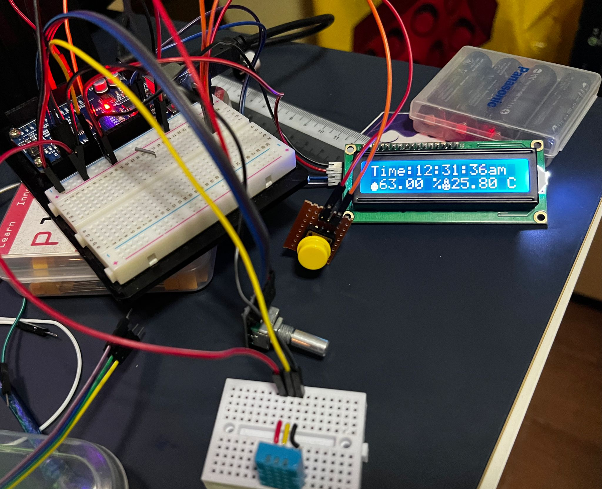
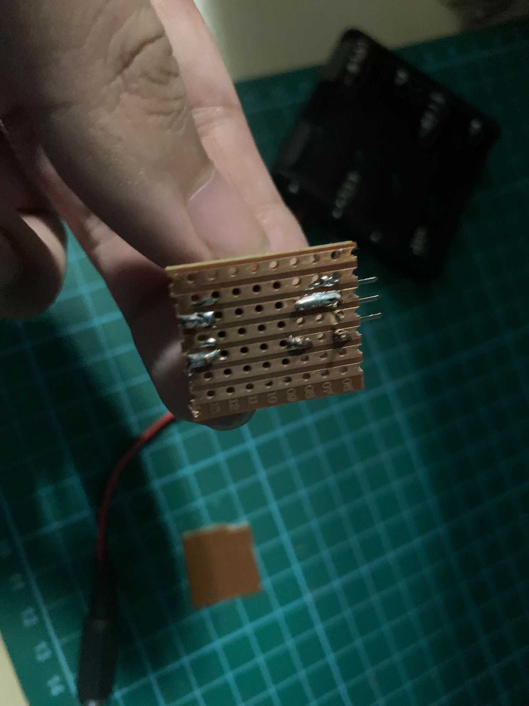
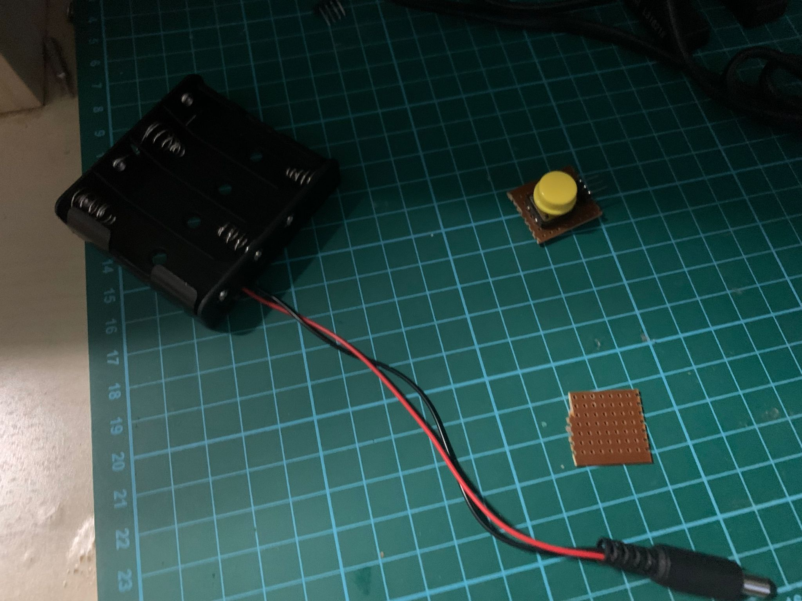
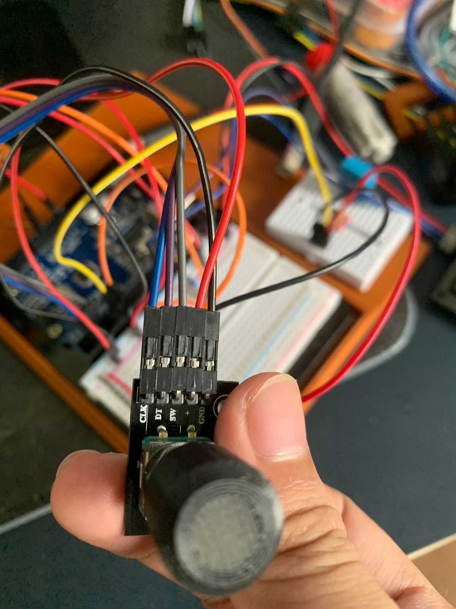
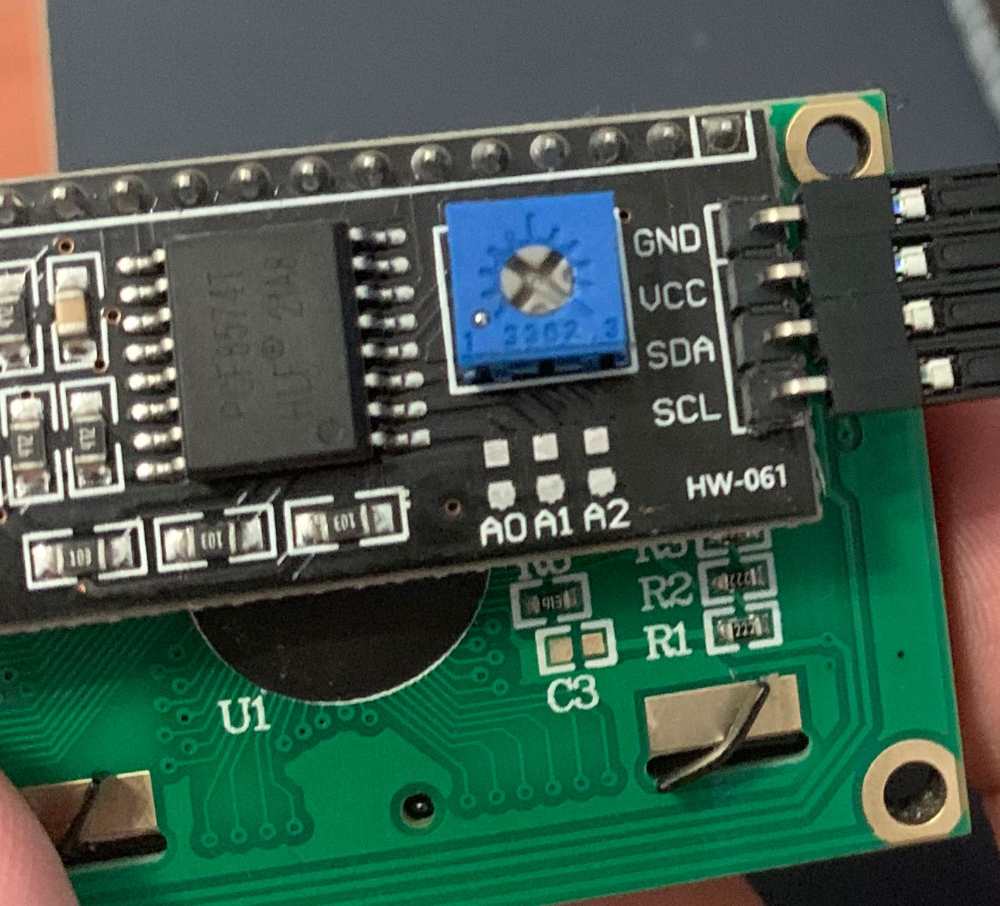
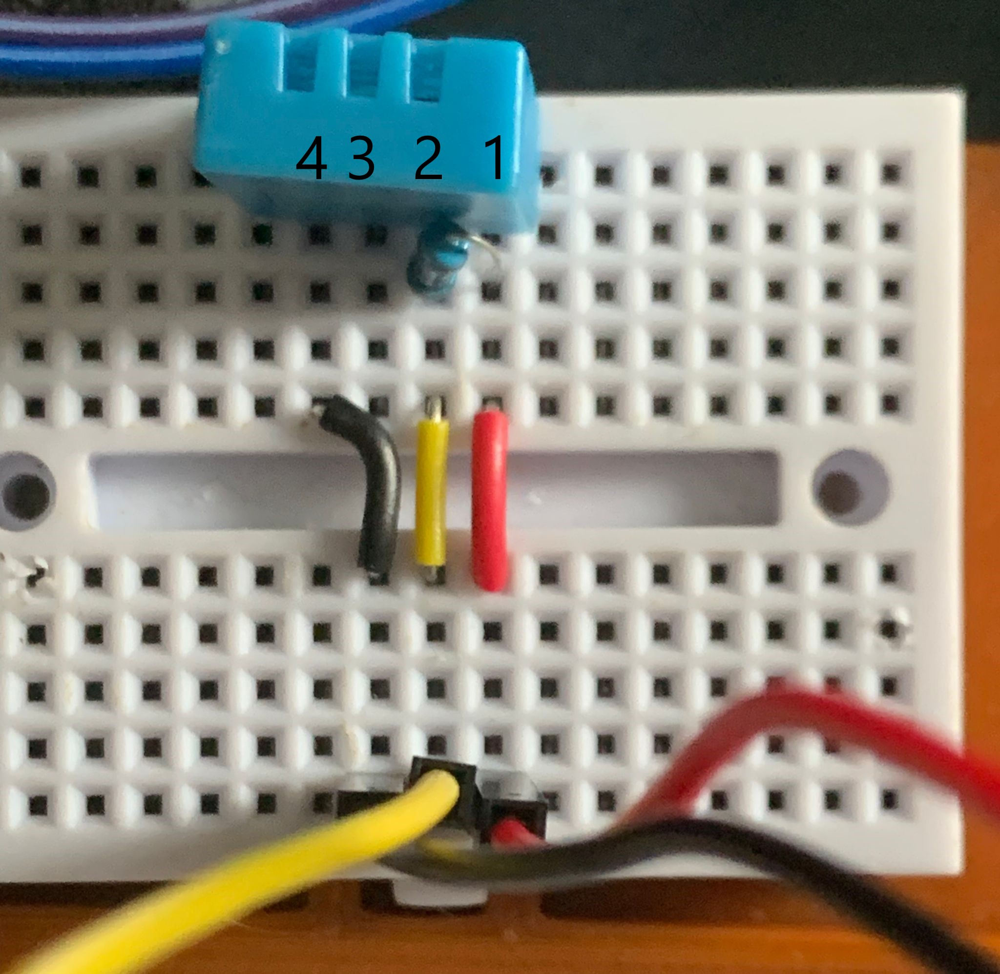
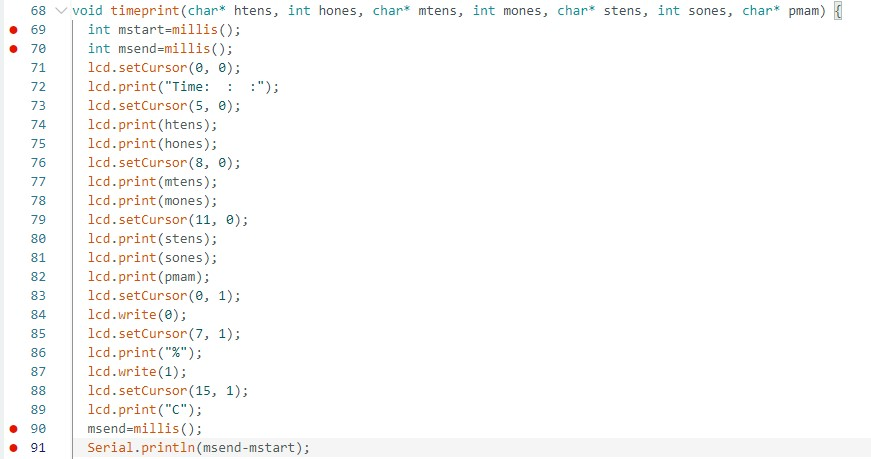

Final Project navigation
Overview • 2D and 3D parts • Electronics and programming • Assembly and final thoughts
Electronics
To make the clock, I used an arduino uno as the main controller for the clock.
Input devices are the button, DHT11 weather sensor, and a rotary encoder.
The sole output device is an LCD which displays all the information of the clock.
Because the jumper cables do not attach to the button reliably, I had to solder together a small breakout board with pins to allow the jumper cables to join.
The cables for the battery back also weren't attached to the connector for the arduino, So I had to solder that too.
CONNECTIONS
The 5V and GND of the Arduino are connected to the positive and negative buses of the breadboard, with the 5V and GND being joined to their respective buses on the other side of the breadboard
For the rotary encoder,
+ pin to 5V bus (red), GND pin to ground bus (black), CLK pin to Arduino pin 2 (blue), DT pin to Arduino pin 3 (Purple), SW pin to Arduino pin 4 (grey)
For the LCD screen I2C adapter,
VCC to 5V (red), GND to ground (black), SDA and SCL pins to the same-named pins on the Arduino.
For the DHT11,
pin 1 (red) connected to 5V, pin 2 (yellow) connected to arduino pin 7, pin 3 has no connection, pin 4 (black) connected to ground.
pin 1 and 2 are connected together by a 10kohm resistor.
For the button, one pin connected to 5V, the pin on the other side is connected to Arduino pin 8 AND a 470 ohm pulldown resistor connected to ground.
PROGRAMMING
Initially, I used Tinkercad to try out the clock code.
(The flickering does not happen on the real clock.)
I had to use separate values for the intervals between the DHT11 reading (five minutes) and the clock updating, without using the delay function to get.
Due to small delays in the Arduino's processing of all the code, I need to compensate for these delays.
This is an example of some code (marked with red dots) to determine the delay.
I then added the delay I found to the millisecond counter.
Overall, this was the most difficult part of the project, and it took a long time to find out how to get the clock to work.
SOURCE CODE
You will need the following libraries for the project:
LiquidCrystal_I2C (found by searching on the libraries browser on the arduino IDE)
Adafruit_SensorDHT.h and DHT_U.h